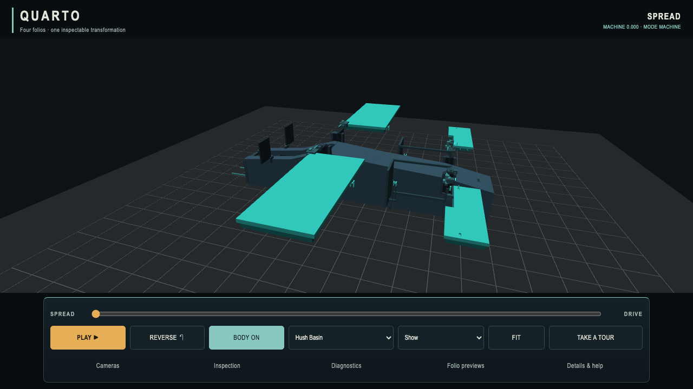
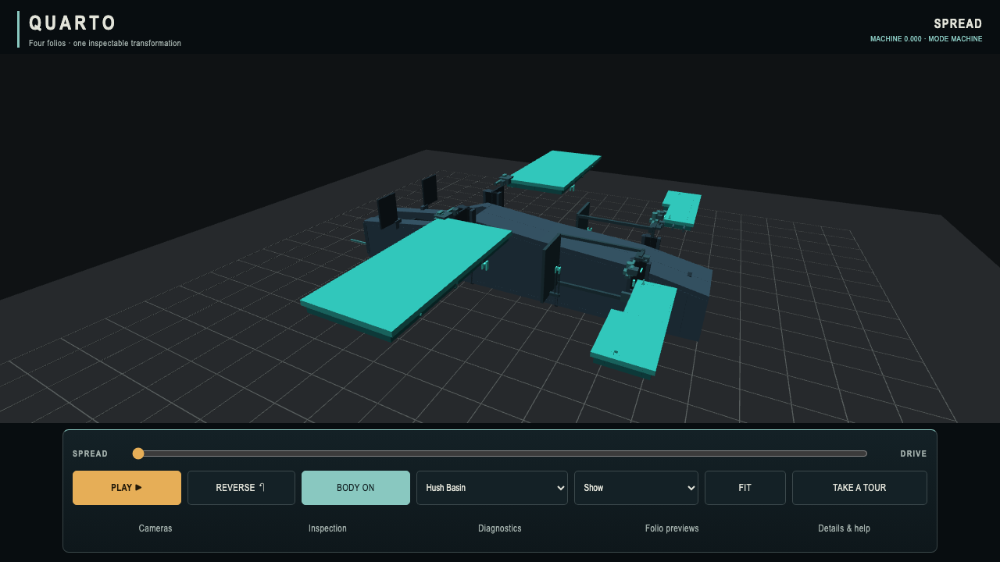
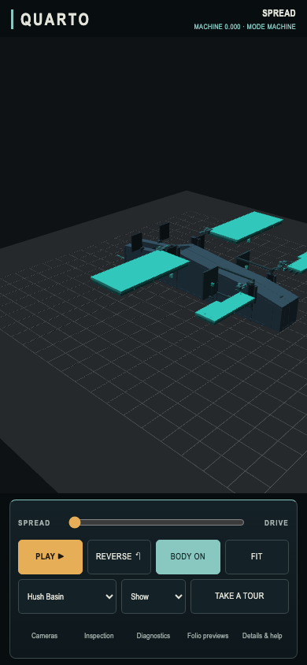
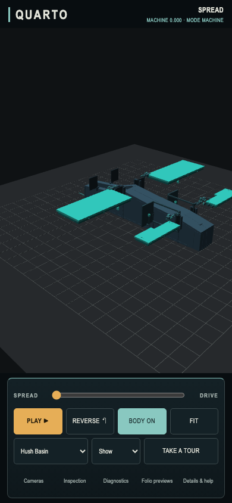

QUARTO / SECOND OWNER COMPARISON / 6 OCTOBER 2026
One third less orbit and pan.
The first preview felt nicer but still fast on the owner’s phone. This revision reduces manual rotation and translation by about a third compared with that preview. Zoom, playback, default Show and camera framing stay the same.
27° → 18°Same 48 px horizontal orbit
2.28 → 1.52Scene units · same 24 px touch pan
Zoom unchangedSame wheel and pinch response
PR #12 · First preview · Evidence and test results
Desktop / identical horizontal orbit
First preview · the version you tried

Revision · less rotation for the same drag

Phone-sized / identical two-finger pan
First preview

Revision

Compared with source eb04851dcc443e0e68aae41f52807832c095fdbd. Matched captures use SwiftShader and flat fallback lighting. Touch is emulated; this is not a physical-phone comfort or performance claim. Evidence covers two input rates, three camera distances and both orbit axes. Authority participation: none. No merge or production deployment.